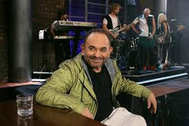

Η ζωή του Σάκη Μπουλά

Βιογραφία:
Ο Σάκης Μπουλάς (Κιλκίς, 11 Μαρτίου 1954 - Μαρούσι Αττικής, 21 Φεβρουαρίου 2014) ήταν Έλληνας ηθοποιός, στιχουργός, επιχειρηματίας, ερμηνευτής και παρουσιαστής.
Η καταγωγή του ήταν από τον Πειραιά, όπου και μεγάλωσε. Όταν ήταν μικρός, οι γονείς του τον παρότρυναν να γίνει δικηγόρος λόγω της άνεσης που παρουσίαζε στον λόγο, ωστόσο αυτός επέλεξε το τραγούδι και την ηθοποιία. Παλαιότερα ήταν ιδιοκτήτης καταστήματος με έπιπλα.
Είχε, επίσης, πει πως δεν του άρεσε ο γάμος καθώς έτσι αιχμαλωτίζεται η ανεξαρτησία του.
Πέθανε στις 21 Φεβρουαρίου 2014 στο νοσοκομείο Υγεία έπειτα από πολύμηνη μάχη με τον καρκίνο. Ο θάνατός του προκάλεσε πανελλήνια συγκίνηση.
Στην κηδεία του παρέστησαν πολλές προσωπικότητες της υποκριτικής, της μουσικής σκηνής αλλά και απλός κόσμος. Τα τελευταία χρόνια της ζωής του διατηρούσε δεσμό με την ηθοποιό και πρώην μοντέλο Αλεξάνδρα Ούστα.
Πηγές:
Thanasis Mpoulas Wikipedia